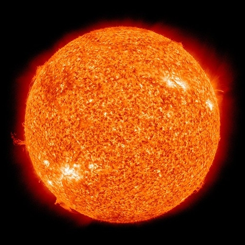
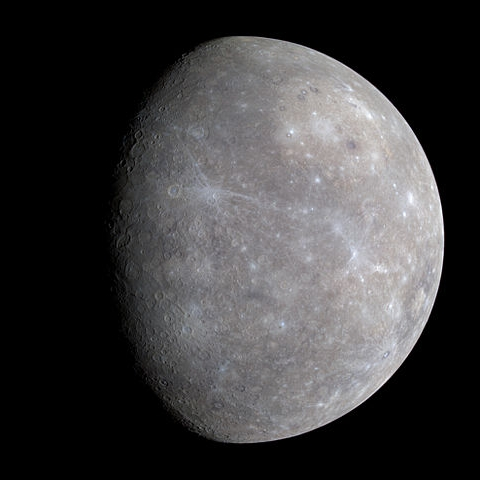
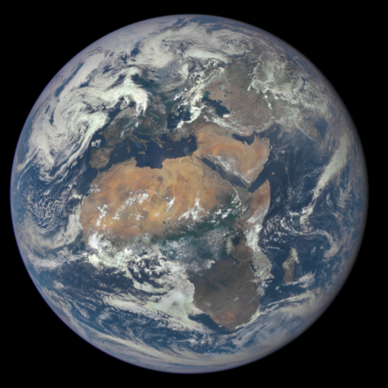
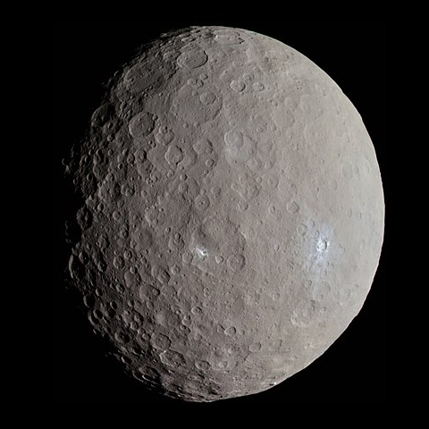
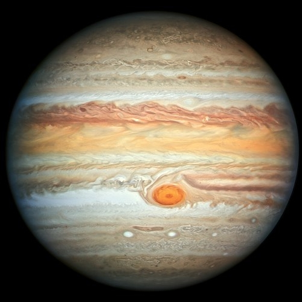
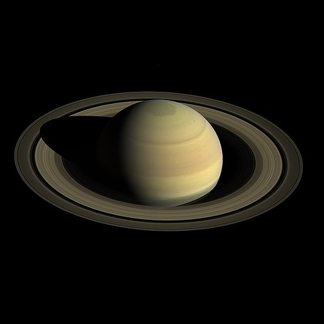
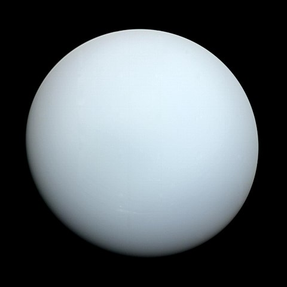
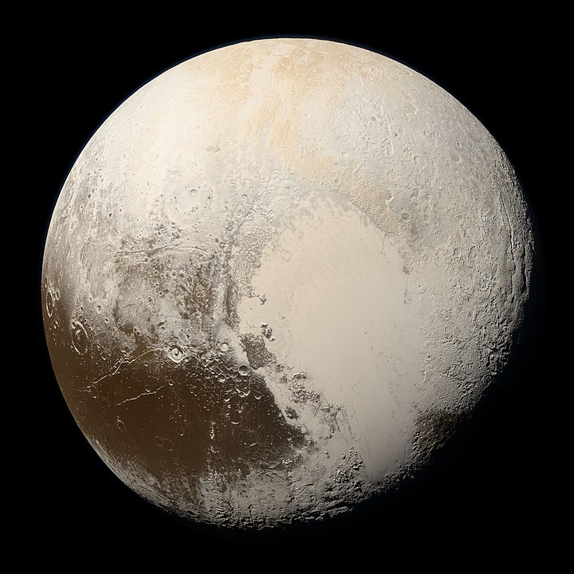
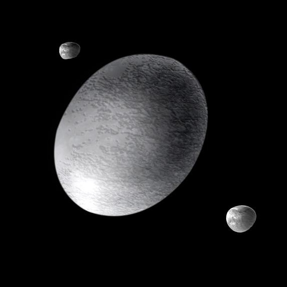
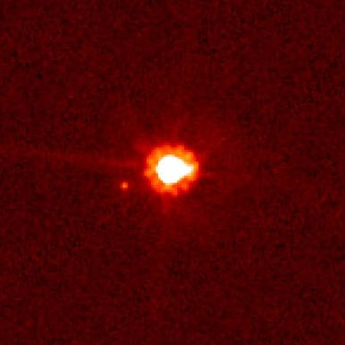

Сонце
Галактичний рік (оборот навкого ценртру
Галактики): 225-250 мільйонів Земних років
Швидкість: 220 км/с (орбітальна навколо
центру Галактики)
Масса: 333 000 земних
Екваторіальний діаметр: 1 392 700 км
109 земних
Об'єм: 1 300 000 земних
Площа: 11 990 земних
Середня густина: 1.408 г/см³
Світність: 3.846×10^26 Вт
Температура на поверхні: 5505°C

Меркурій
Маса (в масах Землі) 0.055
Екваторіальний діаметр (км) 4879
Густина (г/см³) 5.427
Об'єм (в об'ємах Землі) 0.056
Супутники 0
Відстань до Сонця (а.о.) 0.39
Обертання навколо Сонця
(в Земних роках) 0.24
Тривалість дня 58д 15г 30х
Середня температура (°C) 167

Венера
Маса (в масах Землі) 0.815
Екваторіальний діаметр (км) 12104
Густина (г/см³) 5.243
Об'єм (в об'ємах Землі) 0.857
Супутники 0
Відстань до Сонця (а.о.) 0.72
Обертання навколо Сонця
(в Земних роках) 0.62
Тривалість дня 243д 0г 0х
Середня температура (°C) 464

Земля
Маса (в масах Землі) 1
Екваторіальний діаметр (км) 12756
Густина (г/см³) 5.515
Об'єм (в об'ємах Землі) 1
Супутники 1
Відстань до Сонця (а.о.) 1
Обертання навколо Сонця
(в Земних роках) 1
Тривалість дня 1д 0г 0х
Середня температура (°C) 15

Марс
Маса (в масах Землі) 0.107
Екваторіальний діаметр (км) 6792
Густина (г/см³) 3.933
Об'єм (в об'ємах Землі) 0.151
Супутники 2
Відстань до Сонця (а.о.) 1.52
Обертання навколо Сонця
(в Земних роках) 1.88
Тривалість дня 1д 0г 37х
Середня температура (°C) -65

Церера
Маса (в масах Землі) 0.00016
Екваторіальний діаметр (км) 940
Густина (г/см³) 2.16
Об'єм (в об'ємах Землі) 0.00026
Супутники 0
Відстань до Сонця (а.о.) 2.76
Обертання навколо Сонця
(в Земних роках) 4.6
Тривалість дня 0д 9г 4х
Середня температура (°C) -107.2

Юпітер
Маса (в масах Землі) 317.8
Екваторіальний діаметр (км) 142984
Густина (г/см³) 1.326
Об'єм (в об'ємах Землі) 1321.3
Супутники 79
Відстань до Сонця (а.о.) 5.20
Обертання навколо Сонця
(в Земних роках) 11.86
Тривалість дня 0д 9г 55х
Середня температура (°C) -110

Сатурн
Маса (в масах Землі) 95.2
Екваторіальний діаметр (км) 120536
Густина (г/см³) 0.687
Об'єм (в об'ємах Землі) 763.59
Супутники 82
Відстань до Сонця (а.о.) 9.58
Обертання навколо Сонця
(в Земних роках) 29.46
Тривалість дня 0д 10г 34х
Середня температура (°C) -140

Уран
Маса (в масах Землі) 14.5
Екваторіальний діаметр (км) 51118
Густина (г/см³) 1.27
Об'єм (в об'ємах Землі) 63.086
Супутники 27
Відстань до Сонця (а.о.) 19.18
Обертання навколо Сонця
(в Земних роках) 84.02
Тривалість дня 0д 17г 14х
Середня температура (°C) -195

Нептун
Маса (в масах Землі) 17.1
Екваторіальний діаметр (км) 49528
Густина (г/см³) 1.638
Об'єм (в об'ємах Землі) 57.74
Супутники 14
Відстань до Сонця (а.о.) 30.07
Обертання навколо Сонця
(в Земних роках) 164.79
Тривалість дня 0д 16г 6х
Середня температура (°C) -200

Плутон
Маса (в масах Землі) 0.00218
Екваторіальний діаметр (км) 2370
Густина (г/см³) 1.88
Об'єм (в об'ємах Землі) 0.0072
Супутники 5
Відстань до Сонця (а.о.) 39.5
Обертання навколо Сонця
(в Земних роках) 247.9
Тривалість дня 6д 9г 17х
Середня температура (°C) -229

Хуамеа
Маса (в масах Землі) 0.00067
Екваторіальний діаметр (км) 1436
Густина (г/см³) 1.9
Об'єм (в об'ємах Землі) 0.00067
Супутники 2
Відстань до Сонця (а.о.) 43.1
Обертання навколо Сонця
(в Земних роках) 284.1
Тривалість дня 0д 3г 53х
Середня температура (°C) -241.2

Макемаке
Маса (в масах Землі) 0.00067
Екваторіальний діаметр (км) 1434
Густина (г/см³) 1.6
Об'єм (в об'ємах Землі) 0.00083
Супутники 1
Відстань до Сонця (а.о.) 45.3
Обертання навколо Сонця
(в Земних роках) 309.9
Тривалість дня 0д 22г 23хв
Середня температура (°C) -243.2

Ерида
Маса (в масах Землі) 0.00027
Екваторіальний діаметр (км) 1163
Густина (г/см³) 2.52
Об'єм (в об'ємах Землі) 0.00018
Супутники 1
Відстань до Сонця (а.о.) 67.6
Обертання навколо Сонця
(в Земних роках) 557.4
Тривалість дня дані відсутні
Середня температура (°C) -228.2
{kind=link}